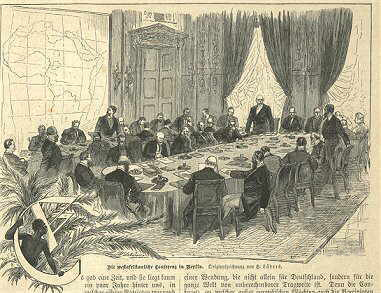
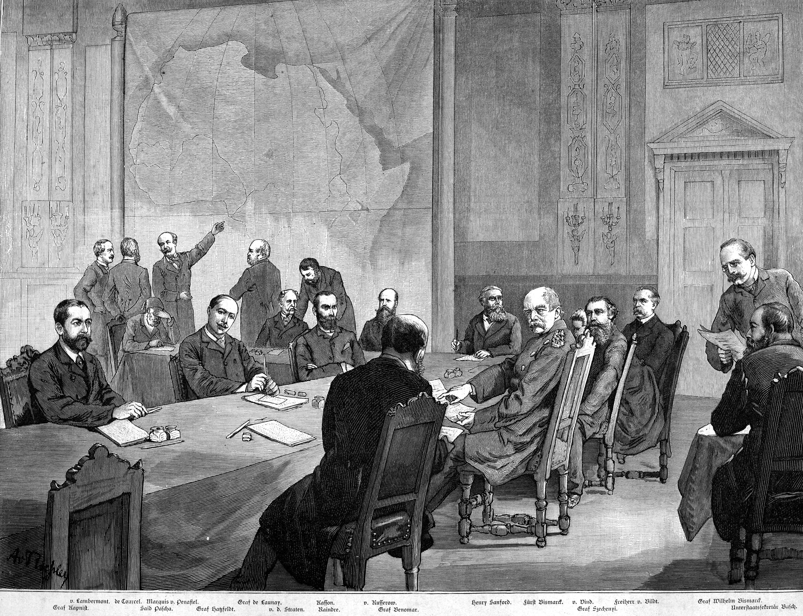
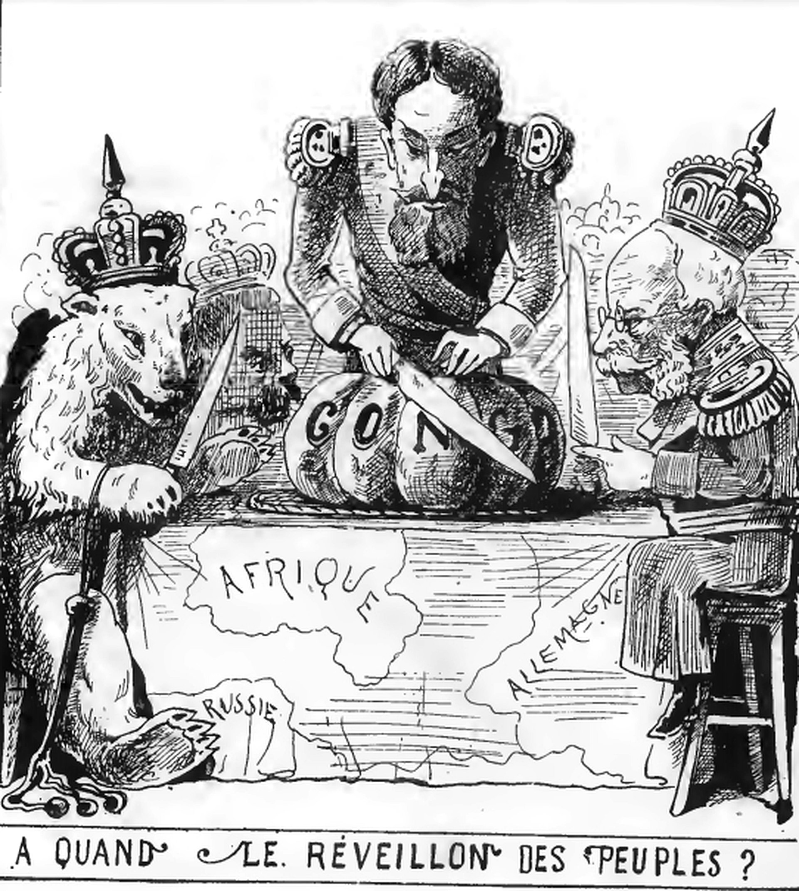

The Berlin Conference of 1884–1885, also known as the Congo Conference (German: Kongokonferenz, pronounced [ˈkɔŋɡoˌkɔnfeˈʁɛnt͡s]) or West Africa Conference (Westafrika-Konferenz, pronounced [ˌvɛstˈʔaːfʁika ˌkɔnfeˈʁɛnt͡s]),regulated European colonisation and trade in Africa during the New Imperialism period and coincided with Germany's sudden emergence as an imperial power. The conference was organized by Otto von Bismarck, the first chancellor of Germany. Its outcome, the General Act of the Berlin Conference, can be seen as the formalisation of the Scramble for Africa, but some historians warn against an overemphasis of its role in the colonial partitioning of Africa, and extensibility justify the motives and outcomes of the conference by drawing attention only to bilateral agreements concluded before and after the conference, whether enforced or not in practice. The conference contributed to ushering in a period of heightened colonial activity by European powers, which eliminated or overrode most existing forms of African autonomy and self-governance. [5] Of the fourteen countries being represented, six of them – Austria-Hungary, Russia, Denmark, the Netherlands, Sweden–Norway, and the United States – came home without any formal possessions in Africa.
 Prior to the conference, European diplomats approached governments in Africa in the same manner as they did in the Western Hemisphere by establishing a connection to local trade networks. In the early 1800s, the European demand for ivory, which was then often used in the production of luxury goods, led many European merchants into the interior markets of Africa. European spheres of power and influence were limited to coastal Africa at this time as Europeans had only established trading posts (protected by gunboats) up to this point.
In 1876, King Leopold II of Belgium, who had founded and controlled the International African Association the same year, invited Henry Morton Stanley to join him in researching and "civilizing" the continent. In 1878, the International Congo Society was also formed, with more economic goals but still closely related to the former society. Leopold secretly bought off the foreign investors in the Congo Society, which was turned to imperialistic goals, with the "African Society" serving primarily as a philanthropic front.
From 1878 to 1885, Stanley returned to the Congo not as a reporter but as Leopold's agent, with the secret mission to organise what would become known as the Congo Free State soon after the closure of the Berlin Conference in August 1885. French agents discovered Leopold's plans, and in response France sent its own explorers to Africa. In 1881, French naval officer Pierre de Brazza was dispatched to central Africa, travelled into the western Congo basin, and raised the French flag over the newly founded Brazzaville in what is now the Republic of Congo. Finally, Portugal, which had essentially abandoned a colonial empire in the area, long held through the mostly defunct proxy Kingdom of Kongo, also claimed the area, based on old treaties with Restoration-era Spain and the Catholic Church. It quickly made a treaty on 26 February 1884 with its former ally, Great Britain, to block off the Congo Society's access to the Atlantic. By the early 1880s, many factors including diplomatic successes, greater European local knowledge, and the demand for resources such as gold, timber, and rubber, triggered dramatically increased European involvement in the continent of Africa. Stanley's charting of the Congo River Basin (1874–1877) removed the last terra incognita from European maps of the continent, delineating the areas of British, Portuguese, French and Belgian control. These European nations raced to annex territory that might be claimed by rivals.
France moved to take over Tunisia, one of the last of the Barbary states, using a claim of another piracy incident. French claims by Pierre de Brazza were quickly acted on by the French military, which took control of what is now the Republic of the Congo in 1881 and Guinea in 1884. Italy became part of the Triple Alliance, an event that upset Bismarck's carefully laid plans and led Germany to join the European invasion of Africa.
In 1882, realizing the geopolitical extent of Portuguese control on the coasts, but seeing penetration by France eastward across Central Africa toward Ethiopia, the Nile, and the Suez Canal, Britain saw its vital trade route through Egypt to India threatened. Under the pretext of the collapsed Egyptian financing and a subsequent mutiny in which hundreds of British subjects were murdered or injured, Britain intervened in the nominally Ottoman Egypt, which it controlled for decades.
The European race for colonialism made Germany start launching expeditions of its own, which frightened both British and French statesmen. Hoping to quickly soothe the brewing conflict, Belgian King Leopold II convinced France and Germany that common trade in Africa was in the best interests of all three countries. Under support from the British and the initiative of Portugal, Otto von Bismarck, the Chancellor of Germany, called on representatives of 13 nations in Europe as well as the United States to take part in the Berlin Conference in 1884 to work out a joint policy on the African continent.
The conference was opened on 15 November 1884, and continued until it closed on 26 February 1885.[13] The number of plenipotentiaries varied per nation,[14] but these 14 countries sent representatives to attend the Berlin Conference and sign the subsequent Berlin Act:[15]
Berlin Conference